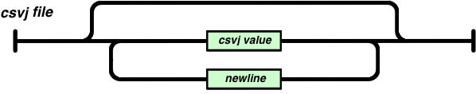
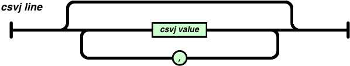
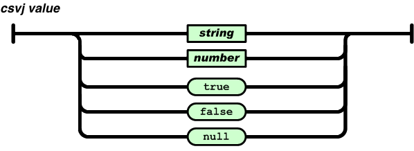

CSVJ is a csv-like format for storing tables that follows certain JSON encoding rules.
Unlike plain csv, CSVJ has a strict definition for separators, quoting, encoding and non-optional header line.
There are many problems with CSV format, mainly text-encoding, separators and delimiters.
You can't be sure that something called 'CSV' generated in one application could be imported to another without tweaking export or import parameters. CSVJ solves this.
A CSVJ file is a sequence of lines, each terminated by \n or \r\n. The first line is the header; subsequent lines are data rows.

newline is \n or \r\n
Each line is a comma-separated sequence of values without the surrounding square brackets of a JSON array. A line itself cannot contain a raw \r or \n — those characters appear in strings only as the escape sequences \r and \n.


Every value is a JSON value as defined by RFC 8259, restricted to the four primitive types — string, number, true, false, null. JSON arrays and objects are not permitted as values.
All lexical rules are inherited from RFC 8259 unchanged:
NaN, no Infinity, no leading zeros, no bare .5, no trailing 1..\uXXXX with UTF-16 surrogate-pair handling.true, false, and null are lowercase only.Files must be encoded in UTF-8. A parser must not emit a byte order mark and may ignore one if present at the start of input (see RFC 8259 section 8.1).
The first line of every CSVJ file is the table header — human-readable column names, always represented as strings. The header line cannot be omitted; when no column information is available, an empty first line (zero values) is used.
\n, which represents an empty header line and zero data rows.\n or \r\n. Every line, including the last, has the shape content + terminator."" or null."","" is rejected like any other duplicate.
The following ABNF grammar, in the notation of RFC 5234, captures the shape of a CSVJ file. The productions string, number, false, true, and null are imported unchanged from RFC 8259 — the same notation JSON itself uses.
csvj-file = header-line *data-line header-line = line data-line = line line = ws [ value *( comma value ) ] ws line-terminator comma = ws %x2C ws line-terminator = LF / CRLF LF = %x0A CRLF = %x0D.0A value = false / null / true / number / string ws = *( %x20 / %x09 )
Note that ws is restricted to space and horizontal tab; the carriage return and line feed that RFC 8259 also classes as insignificant whitespace are reserved as line terminators in CSVJ.
The grammar above does not express the cross-line semantic constraints from the structural rules — that the file must contain at least one line (rule 1), that every data line has the same value count as the header line (rule 3), and that header values are pairwise distinct as JSON strings (rule 4). A conforming parser enforces those constraints in addition to the grammar.
An implementation claims CSVJ conformance by accepting every input the specification calls valid and rejecting every input the specification calls invalid. The language-agnostic conformance test suite for CSVJ is published at github.com/csvj-org/conformance as accept-set, reject-set, and expected-output vectors that any parser can run regardless of implementation language.
Consider the following table:
| Year | Make | Model | Description | Price |
|---|---|---|---|---|
| 1996 | Ford | Ka | abs, ac | 3000 |
| 1998 | Chevy | Venture "Extended Edition" | 3999 | |
| 1998 | Chevy | Venture "Executive Edition, Large" | 4999 | |
| 1995 | Jeep | Grand Cherokee | SELL NOW! air, moon roof, loaded |
$3599 |
The table above represented in CSVJ will look the following way:
"Year","Make","Model","Description","Price" 1996,"Ford","Ka","abs,ac",3000 1998,"Chevy","Venture \"Extended Edition\"","",3999 1998,"Chevy","Venture \"Executive Edition, Large\"","",4999 1995,"Jeep","Grand Cherokee","SELL NOW!\nair, moon roof, loaded","$3599"
The representation does not change, regardless preferred decimal or value separators of the country the code is running in.
See github.com/csvj-org for all code by CSVJ.org. Following libraries are available:
Looking for volunteers: we want to create CSVJ libraries for different languages including, but not limited to: C#, C++, Java, Matlab, Objective-C, PHP, Python, R, rust, Swift.
Other languages are welcome too. Email rcpt at andrian dot io with csvj mentioned in the subject.
After libraries are created, we would like the following types software to support CSVJ: RDBMS, spreadsheet editors, statistical software, financial and accounting software, machine learning packages and solutions, user management systems and others.
CSVJ files must have the .csvj extension, so users can distinguish them from broken CSV files.
Currently there is no registered MIME extension, however we plan to apply for text/csvj at some point.
Because CSVJ files are plain text, you are free to use text/plain MIME type as long as .csvj extension is preserved.
All original content at csvj.org is distributed under MIT license:
Copyright (c) 2018 CSVJ.org
Permission is hereby granted, free of charge, to any person obtaining a copy
of this software and associated documentation files (the "Software"), to deal
in the Software without restriction, including without limitation the rights
to use, copy, modify, merge, publish, distribute, sublicense, and/or sell
copies of the Software, and to permit persons to whom the Software is
furnished to do so, subject to the following conditions:
The above copyright notice and this permission notice shall be included in all
copies or substantial portions of the Software.
THE SOFTWARE IS PROVIDED "AS IS", WITHOUT WARRANTY OF ANY KIND, EXPRESS OR
IMPLIED, INCLUDING BUT NOT LIMITED TO THE WARRANTIES OF MERCHANTABILITY,
FITNESS FOR A PARTICULAR PURPOSE AND NONINFRINGEMENT. IN NO EVENT SHALL THE
AUTHORS OR COPYRIGHT HOLDERS BE LIABLE FOR ANY CLAIM, DAMAGES OR OTHER
LIABILITY, WHETHER IN AN ACTION OF CONTRACT, TORT OR OTHERWISE, ARISING FROM,
OUT OF OR IN CONNECTION WITH THE SOFTWARE OR THE USE OR OTHER DEALINGS IN THE
SOFTWARE.
Some images from json.org are used according to JSON license:
Copyright (c) 2002 JSON.org
Permission is hereby granted, free of charge, to any person obtaining a copy of this software and associated documentation files (the "Software"), to deal in the Software without restriction, including without limitation the rights to use, copy, modify, merge, publish, distribute, sublicense, and/or sell copies of the Software, and to permit persons to whom the Software is furnished to do so, subject to the following conditions:
The above copyright notice and this permission notice shall be included in all copies or substantial portions of the Software.
The Software shall be used for Good, not Evil.
THE SOFTWARE IS PROVIDED "AS IS", WITHOUT WARRANTY OF ANY KIND, EXPRESS OR IMPLIED, INCLUDING BUT NOT LIMITED TO THE WARRANTIES OF MERCHANTABILITY, FITNESS FOR A PARTICULAR PURPOSE AND NONINFRINGEMENT. IN NO EVENT SHALL THE AUTHORS OR COPYRIGHT HOLDERS BE LIABLE FOR ANY CLAIM, DAMAGES OR OTHER LIABILITY, WHETHER IN AN ACTION OF CONTRACT, TORT OR OTHERWISE, ARISING FROM, OUT OF OR IN CONNECTION WITH THE SOFTWARE OR THE USE OR OTHER DEALINGS IN THE SOFTWARE.